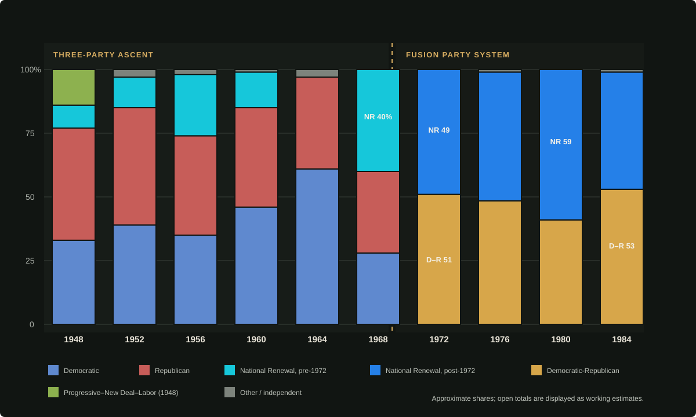

Electoral politics in the United States has been dominated by successive pairs of mass parties since the 1790s. The historic Democratic–Republican rivalry survives through the Depression, but American neutrality, the collapse of Britain, and a delayed postwar recovery break the New Deal coalition. A three-party order emerges after 1948; in 1972 the old parties fuse, leaving National Renewal and the Democratic-Republican Party as the two national governing coalitions.
Contents
Overview
Political parties are not mentioned in the Constitution. Their authority instead rests on election law, state ballot rules, legislative caucuses, primary elections, conventions, and custom. American plurality elections and single-member districts reward broad coalitions, while the Electoral College can punish a party whose national vote is efficiently spread but not concentrated into state victories. These incentives usually produce two large parties—but the contingent elections of 1956 and 1968 demonstrate that the system can sustain three when regional strength prevents an electoral majority.
Party names do not denote permanent ideologies. Jefferson's Democratic-Republicans, Jackson's Democrats, Lincoln's Republicans, Roosevelt's New Deal coalition, Rockwell's National Renewal, and Reagan's fused Democratic-Republicans each combine groups that earlier generations would have regarded as opponents. The political history of the republic is therefore conventionally divided into “party systems”: periods in which the same broad coalitions, issues, and electoral geography organize national competition.
History and political eras
First Party System, 1792–1824
Federalists around Alexander Hamilton favored national finance, commerce, manufacturing, and a strong central government. Democratic-Republicans around Thomas Jefferson and James Madison defended an agrarian republic, state authority, and suspicion of concentrated federal power. The Federalists' decline after the War of 1812 produced the brief Era of Good Feelings, but factional competition continued inside the dominant party.
Second Party System, 1828–1854
Andrew Jackson's supporters organized the Democratic Party as a national mass party. His opponents—National Republicans, Anti-Masons, and other anti-Jackson movements—coalesced as the Whigs. Democrats emphasized popular executive leadership and states' rights; Whigs favored congressional government, economic modernization, banks, tariffs, and internal improvements. Slavery's expansion destroyed the Whig coalition in the 1850s.
Third Party System, 1854–1896
The antislavery Republican Party inherited much of the Whig economic program and became the party of Union victory, industrial development, and Reconstruction. Democrats combined the white South, Northern urban organizations, immigrants, and agrarian opposition. Civil War memory, race, tariffs, monetary policy, and veterans' loyalties kept participation and partisan identification unusually intense.
Fourth Party System, 1896–1932
William McKinley's 1896 victory consolidated Republican strength in the industrial North and established a durable business–labor–middle-class coalition. Progressive reform altered both parties without displacing them. Trust regulation, banking, tariffs, organized labor, immigration, suffrage, and administrative government replaced Reconstruction as the principal national questions. Democratic victories under Woodrow Wilson interrupted but did not erase Republican advantage.
Fifth Party System, 1932–1948
The Depression and Franklin D. Roosevelt's New Deal move organized labor, urban machines, many immigrants, Black voters, farmers, intellectuals, and white Southern conservatives into one Democratic coalition. Republicans divide between conservative opponents of the administrative state and Northeastern modernizers willing to retain parts of it. Unlike common history, the United States does not enter the Second World War and receives no full wartime mobilization boom. Roosevelt wins again in 1944 with James F. Byrnes, but his death and the Byrnes administration's narrowing of the emergency state weaken the New Deal as a governing identity.
The three-party interregnum, 1948–1972
The 1948 election is a four-way contest among Thomas Dewey's Republicans, Byrnes-aligned Recovery Democrats, a Progressive–New Deal–Labor ticket, and National Renewal. Dewey wins, but no faction restores the older two-party equilibrium. National Renewal becomes durable under Charles Lindbergh, wins Minnesota and a significant national vote in 1952, and helps send the fractured 1956 election to the House.
John F. Kennedy defeats Earl Warren and Lindbergh in 1960. His aerospace, hemispheric, civil-rights, and national-mission politics temporarily cross the new cleavage; National Renewal tactically endorses him in 1964 rather than fielding a major separate candidacy. George Lincoln Rockwell then succeeds Lindbergh and converts the movement into a disciplined national party with youth, labor, racial-nationalist, corporatist, and technological wings.
In 1968 Rockwell receives roughly forty percent of the popular vote and the largest electoral plurality, but not an Electoral College majority. The House selects Republican Nelson Rockefeller through a Democratic–Republican Establishment Compact. The constitutional result creates National Renewal's foundational “Stolen Mandate,” “House Betrayal,” and “Establishment Coup” narratives.
The fusion or Sixth Party System, 1972–present
Democrats and Republicans formally fuse in 1972 to prevent a National Renewal presidency. Rockefeller and a hawkish labor Democrat narrowly defeat Rockwell under the Democratic-Republican label, approximately 51–49, while National Renewal wins the House and approaches Senate parity. The old party committees, state organizations, donors, unions, newspapers, clubs, and elected officials do not disappear at once; they are gradually federated into a single opposition whose first coherent purpose is constitutional resistance to National Renewal.
Rockwell's assassination in 1975 and Pat Buchanan's prevention of retaliatory violence move National Renewal from insurgency to lawful government. Buchanan wins narrowly in 1976 and decisively in 1980. Ronald Reagan's 1984 victory for the Democratic-Republicans—and Buchanan's full cooperation with the transfer—partially heals the legitimacy wound of 1968 without ending National Renewal's congressional strength.
Popular votes to political parties

| Election | Republican | Democratic | National Renewal | Democratic-Republican | Other | Status |
|---|---|---|---|---|---|---|
| 1948 | 44% | 33% | 9% | — | 14% Progressive–Labor | Diagrammatic |
| 1952 | 46% | 39% | 12% | — | 3% | Diagrammatic |
| 1956 | 39% | 35% | 24% | — | 2% | Diagrammatic |
| 1960 | 39% | 46% | 14% | — | 1% | Diagrammatic |
| 1964 | 36% | 61% | Endorses Kennedy | — | 3% | Working |
| 1968 | 32% | 28% | ≈40% | — | — | Canon proportions |
| 1972 | Fused | ≈49% | ≈51% | — | Working canon | |
| 1976 | Fused | ≈50.5% | ≈48.5% | ≈1% | Winner canon; totals open | |
| 1980 | Fused | ≈59% | ≈41% | — | Canon / working totals | |
| 1984 | Fused | ≈46% | ≈53% | ≈1% | Canon / working range | |
Derivation of the major parties
The diagram is institutional rather than ideological. The modern Democratic-Republicans inherit organizations from both old parties, while Reagan also absorbs National Renewal's language of mission, family, production, and national greatness. Conversely, National Renewal recruits former Democrats, Republicans, independents, and people previously outside electoral politics.
Organization of American political parties
American parties remain federations rather than European-style membership organizations. State law controls ballot access and primaries; county committees, municipal organizations, governors, congressional caucuses, donors, unions, churches, newspapers, broadcasters, and civic groups all possess independent power. A national committee can raise money, coordinate a convention, publish a platform, and support candidates, but it cannot reliably expel an elected official or dictate every state nomination.
National Renewal is the partial exception. Its clubs, youth programs, veterans' networks, shooting organizations, production institutes, media personalities, and occupational language give it a denser movement culture than the historic parties. Yet its leaders must still win state primaries and ordinary elections. Control of government after 1977 strengthens its patronage and communications capacity but also creates independent congressional barons and institutionalists who defeat the National Unity Amendment and refuse a constitutional rupture. The leaked Narrative Shaping memorandum later makes the party's cultural coordination a central 1984 campaign issue.
The Democratic-Republican Party begins as an emergency federation. Old Democratic labor and urban organizations coexist with Republican business, suburban, and constitutionalist networks. Its weakness is factional incoherence; its strength is that few institutions can be wholly captured by one ideological center. Reagan's post-1980 “constitutional free enterprise” supplies a shared doctrine without abolishing the party's internal traditions.
The two-party system
Plurality voting, the Electoral College, single-member congressional districts, and state ballot laws encourage consolidation. The 1948–68 three-party period persists because National Renewal has geographically concentrated support and because neither old party will initially surrender its identity. Once Rockwell wins the largest plurality in 1968, the incentive reverses: fusion becomes the only dependable method of preventing repeated contingent elections.
Major parties in 1985
National Renewal
A fascist-adjacent mass party combining economic nationalism, corporatist bargaining, family policy, immigration restriction, military and space mission, anti-bank populism, labor discipline, and selectively constitutional imagery. It treats productive labor and capital as subordinate to national purpose.
- De facto color
- Cyan before 1972; blue afterward
- Presidential leaders
- Lindbergh, Rockwell, Buchanan, Phillips
- 1985 position
- House majority; Senate minority; presidential opposition
Democratic-Republican Party
A fusion of the historic Democratic and Republican organizations. It defends constitutional pluralism, independent institutions, competitive markets, civil liberty, independent unions, a limited social floor, and a strategic but bounded state. Reagan recasts it as patriotic constitutional market nationalism.
- Chart color
- Amber; editorial convention
- Presidential leaders
- Rockefeller, Reagan
- 1985 position
- Presidency and Senate; House minority
Principal factions
| Party | Faction | Emphasis |
|---|---|---|
| National Renewal | Buchananites | Economic nationalism, family policy, Catholic–Christian rhetoric, cultural nationalism, constitutional electoral rule |
| Mission technocrats | Space, nuclear energy, computing, industrial modernization, technical education, administrative competence | |
| Congressional institutionalists | Legislative authority, regular elections, state organizations, resistance to permanent emergency power | |
| Christian Social or Sheenite wing | Subsidiarity, duties of property, worker dignity, family institutions, Church independence, rejection of racial idolatry | |
| Radical corporatists | Compulsory occupational representation, synchronized economic councils, party supervision of organized interests | |
| Rockwell Old Guard | Racial nationalism, martyr politics, movement discipline, suspicion of Buchanan's compromises | |
| Democratic-Republican | Constitutional free-enterprise wing | Competitive markets, tax reduction, monetary restraint, deregulation, independent economic power |
| Labor Democrats | Independent unions, social insurance, industrial employment, hawkish defense and hemispheric policy | |
| Rockefeller moderates | Administrative competence, social floor, civil rights, business government, international restraint | |
| Civil libertarians | Speech, association, due process, opposition to party influence over culture and security institutions | |
| Reagan nationalists | Family, production, strategic industry, military strength, reciprocal markets, “The Republic Is the Mission” |
Minor parties and independents
Third parties recur throughout American history as protest vehicles, regional organizations, ideological schools, and temporary homes for leaders excluded by the major coalitions. Anti-Masons, Know Nothings, Populists, Progressives, Socialists, Prohibitionists, and States' Rights tickets influence platforms even when they fail to win the presidency.
In the alternate postwar system, the Progressive–New Deal–Labor ticket is nationally important in 1948 but cannot survive as an equal party. Much of its labor and welfare constituency returns to the Democrats and later enters the fusion party; other activists remain in state progressive organizations, unions, or nonpartisan reform movements. Splinter ballot lines also appear around segregation, civil liberty, religious politics, peace, and economic protest, but their final names and national totals are not yet fixed in canon.
Independent identification remains larger than formal minor-party organization. An unaffiliated candidate must assemble ballot access state by state and normally lacks the durable precinct, fundraising, legal, and media machinery of a major party. Independents elected to Congress usually cooperate with one of the two national caucuses.
Coalitions and electoral geography
National Renewal's early geographic anchor lies in Lindbergh's Upper Midwest and among voters attracted to isolationism, aviation, veteran culture, industrial discipline, and anti-establishment nationalism. Rockwell adds younger movement cadres and a harder racial politics. Buchanan broadens the coalition toward Catholics, the South, industrial workers, small proprietors, family-policy voters, and communities tied to defense, space, energy, or nationally directed production. The 1980 landslide is unusually broad and should not be read as a permanent fifty-state alignment.
The fusion party initially performs best where the old Democratic or Republican organizations can transfer their machinery: Northeastern establishment states, large cities, parts of the industrial union belt, moderate suburbs, Black political institutions, and business communities alarmed by National Renewal. Reagan adds western, suburban, small-business, culturally conservative, and younger aspirational voters without surrendering the party's constitutionalist center.
Exact state maps for 1976, 1980, and 1984 remain open. The archive therefore treats regional descriptions as coalition tendencies, not settled county-level results. The popular-vote chart records national proportions; the election article records the fixed winners and constitutional consequences.
Alternative interpretations
When did the Fifth Party System end?
Some historians date the break to the 1944 Roosevelt–Byrnes ticket, others to Byrnes's dismantling of the New Deal emergency state, and others to the four-way election of 1948. A minority treats the entire 1932–72 period as one long order whose internal crisis produced fusion rather than replacement.
Is the 1948–72 period a three-party system?
National Renewal's repeated state victories and its 1968 plurality support the label. Critics note that it tactically endorses Kennedy in 1964 and that its national organization develops unevenly. They prefer “interregnum” or “failed realignment” until the fusion crisis establishes a stable pair of major parties.
Two parties—or several coalitions?
A four-party interpretation sees constitutional and radical National Renewal as separate movements sharing a ballot line, and labor-statist and market-constitutionalist Democratic-Republicans as separate parties held together by electoral necessity. A still broader interpretation emphasizes six organized currents: Buchananites, Rockwellians, technocrats, labor Democrats, Rockefeller moderates, and Reagan free-enterprise nationalists. The two-party label remains institutionally correct, but it can conceal the coalitions that actually govern.
Later party system: The Omaha Rules preserve National Renewal as a federation until the 1993 schism. Harwood's Productive faction retains the old name; Constitutional Renewal, American Producers, and National Vanguard join the surviving Democratic-Republicans in the Five-Party Republic.
Source basis
- Setting Bible — United States and National Renewal
- Setting Timeline — elections and party realignment
- Transcript — American political development
- Character Dossier — Buchanan, Landry, and party networks
- Reference structure — Political parties in the United States
- Reference chart data — Wikimedia Commons